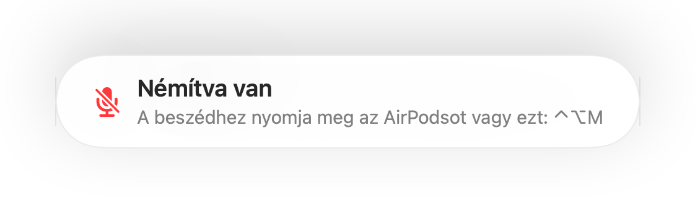

„Némítva van” emlékeztető minden hívásalkalmazáshoz
A Zoom figyelmeztet, ha némítás közben beszél. A legtöbb más alkalmazás nem teszi ezt, a webes videohívás pedig szinte soha. Egy perce magyaráz valamit, mire észreveszi, hogy mindenki csak vár Önre az értekezleten.
A Muffle figyeli a beszédet, amíg a mikrofon némítva van, és emlékeztetőt jelenít meg bármelyik alkalmazásban. Amikor a hívás AirPodsot vagy headsetet használ, a Mac saját mikrofonját figyeli, és kizárólag a hangerőt méri. Semmi nem kerül rögzítésre.
Az emlékeztető bekapcsolása
- 1
Telepítse a Muffle-t, és engedélyezze a mikrofonhozzáférést.
- 2
Győződjön meg róla, hogy az „Emlékeztessen, ha némítás közben beszélek” be van kapcsolva a Muffle beállításaiban.
- 3
Csatlakozzon egy híváshoz AirPodsszal vagy headsettel, majd némítsa el a mikrofont.
- 4
Kezdjen el beszélni. Megjelenik a „Némítva van” emlékeztető.

- Úgy csatlakozik egy híváshoz, hogy az előző konferencia után némítva maradt? A Muffle azonnal emlékezteti, amint a hívás elindul.
- A gépelés nem aktiválja az emlékeztetőt. Csak a folyamatos beszéd váltja ki a távmunka során.
Kérdések
Működik az emlékeztető a Mac beépített mikrofonjával?
Akkor működik, ha a hívás AirPodsot vagy headsetet használ. Ha a hívás a Mac saját mikrofonját használja, az a mikrofon némítva van, így nem hallja Önt.
Rögzítésre kerül a hangom?
Nem. A Muffle kizárólag a hangerőt méri, és soha nem tárol vagy küld el semmilyen hanganyagot.